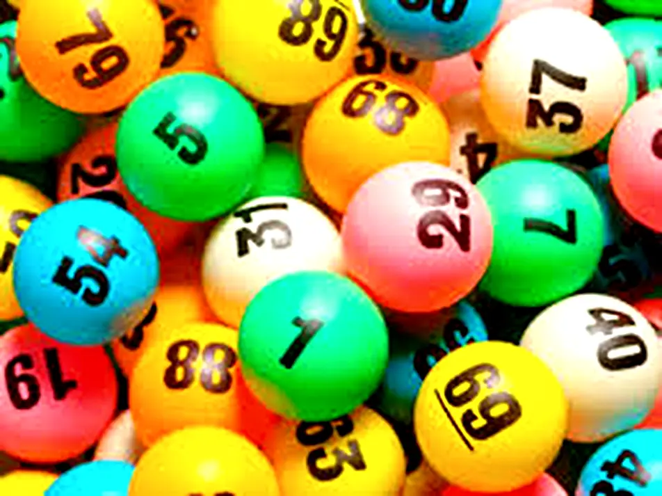

01 / The Category Error
The Maths Works, but the Model Is Wrong.
Privilege permits the wealthy of South Africa to dismiss the lottery as a statistical farce designed to exploit the uneducated masses. Comfortably insulated by their own security, they ignore the reality that for millions, a ticket is the last vestige of an affordable architecture of hope. The conventional case against the lottery appears decisive precisely because it begins with arithmetic and stops before human experience enters the calculation. The logic is clinical: the wager costs more than its expected return, most players lose and those players are overwhelmingly poor. The conclusion follows neatly: it is an irrational product sold to the vulnerable, justified only by the fraction of revenue diverted to good causes.
This paradigm explains neither the product nor the buyer. It cynically equates purchased hope with alcohol and tobacco, categorising a mechanism that produces anticipation, social meaning and psychological relief as a mere social impediment. It assumes the economic calculus of the wealthy is universal and diagnoses anyone who values something different as fundamentally confused.
In a South African context defined by constrained opportunity, widespread psychological distress and communally imagined prosperity, this analytical framework is economically bankrupt, psychologically crude and culturally blind.
Consider an engagement ring. Its resale value is compromised upon purchase, a cheap metal band can perform its exact practical function and its financial yield is disastrous. Yet economists do not interrupt marriage proposals to warn that the buyer has confused consumption with investment. The asset holds symbolic, emotional and social weight. Evaluating it strictly by its liquidation value entirely misses the purpose of the transaction.
The lottery suffers the exact same category error. A ticket is a wager, certainly, but it is also a manufactured experience. It purchases anticipation, collaborative imagination and a temporary suspension of the belief that tomorrow must violently resemble today. These are not the accidental byproducts of a financial bet. They are the core utilities being bought. Humans routinely pay for experiences that end, symbols that cannot be sold and emotions that yield no dividend. Behavioural economics did not reveal that people are defective calculators. It revealed that conventional economics was simply measuring the wrong variables.
02 / Anticipatory Utility
Hope Is Consumed Before the Draw
The empirical record is unapologetically direct. In the 2014 study “Let Me Dream On!”, researchers gave participants real lottery tickets to observe how they valued the waiting period. The emotional return was decisively positive. Participants did not rush to resolve the gamble; a substantial minority preferred the draw delayed, and most chose to ration their tickets across multiple days rather than face immediate statistical execution.
They were not trying to improve the odds. They were extending the psychological shelter. Economists politely label this ‘anticipatory utility’ — the habit of consuming a product in the mind before it arrives in reality. Just as a distant holiday booking alters the drudgery of the present, a lottery ticket purchases an immediate mental departure. Yet the lottery’s destination is not a beach; it is a parallel existence.
The transaction is a masterpiece of asymmetry. For a negligible fee, the buyer secures a microscopic chance of wealth and an absolute certainty of temporary relief. In that suspended interval, debts evaporate, school fees are banished, parents receive care and dignity returns. The mathematical reality of the jackpot is secondary to the immediate consumption of hope.
When the numbers inevitably fall against them, the financial contract dies. But the lived anticipation is not retroactively deleted. We do not demand a refund for a concert just because the final chord has sounded. The player loses the bet but keeps the experience. Any economic ledger that tallies the R5 as a pure loss while assigning zero value to that architecture of hope has not exposed an irrational transaction. It has merely exposed the total blindness of the accountant.

03 / Unequal Futures
South Africa Has a Shortage of Possibility
In the first quarter of 2026, South Africa’s official unemployment rate stood at 32.7%. There were an estimated 8.1 million unemployed people and a further 3.9 million discouraged job-seekers. These figures document more than a mere scarcity of wages; they chronicle millions of futures where effort, advancement and security have permanently severed their historical connection.
For the professionally insulated, hope is structural. Qualifications, assets, networks and mobility ensure that alternatives always exist. This is embedded hope: the quiet arrogance of knowing that if one door slams shut, another can be levered open. That psychological asset is distributed as viciously as income. For the majority of South Africans, qualifications guarantee nothing, sweat yields no progress and a single domestic emergency can incinerate a decade of fragile stability.
The formal economy preaches the gospel of gradual improvement while stubbornly withholding the staircase. The lottery offers the only remaining heresy: discontinuous change. The probability may be microscopic, but the transformation is entirely imaginable.
Development economists call this ‘aspirations failure’. Chronic deprivation does not merely restrict resources; it actively narrows the architecture of the future. This reality does not instantly render every ticket purchase financially prudent, but it exposes why identical mathematical odds carry wildly different utility across the class divide. To the affluent observer burdened with ten conventional routes to success, purchasing a lottery ticket is a statistical absurdity. To the citizen with zero, even a phantom door belongs to an entirely different psychological category.
04 / The Missing Counterfactual
Hope, Mental Health and the Missing Counterfactual
South Africa labours under a crushing psychological deficit. With a nationally representative survey finding that 25.7% of adults screened positive for probable depression and 17.8% for probable anxiety, refusing to account for the utility of hope is intellectually dishonest. A meta-analysis of 129 studies found a robust inverse association between hope and anxiety: greater hope travelled with lower anxiety across the evidence base. Hope here is not cheerful decoration, but perceived agency and pathways towards a goal.
Belief demonstrably alters present experience. This does not miraculously convert a lottery ticket into medicinal cure, but it does obliterate the comfortable assumption that an imagined future is psychologically inert. If we eradicate these manufactured moments of hope, what is the exact counterfactual? A surge in domestic despair? Collapsing crisis services? Conventional ledgers meticulously tally gambling harm but quietly assign a cost of zero to the mass removal of hope.
This omission is fatal because the lottery operates at a psychological scale no state intervention can match. It requires no therapist, no diagnosis and no waiting room. It simply mass-distributes imagined agency, repair and escape. South Africa, of all nations, should understand the raw utility of improbable hope. Our democratic transition was not born of certainty; it required citizens to treat a radically different future as credible long before the institutions existed to support it.
Hope is not proof of a misunderstood reality. Sometimes, it is the solitary prerequisite for changing it.
05 / Class and Authority
The Privilege of Defining Rationality
Beneath the lottery debate lies a raw question of authority: who gets to dictate what another adult is permitted to value? The player explains that the ticket purchases enjoyment, anticipation and a rare opportunity to imagine release. The policy critic politely replies that the player has misunderstood their own purchase. The player’s lived utility is diagnosed as cognitive failure, while the outsider’s condemnation is crowned as objective simply because it arrives carrying a probability table.
This transfer of authority becomes toxic when viewed through the lens of class. Condemnation flows thickest from professionals whose lives already possess embedded hope. Their financial security does not automatically make them wrong, but it is highly relevant when they declare that purchased possibility lacks legitimate value. We routinely grant affluent irrationality immense dignity. Wealthy consumers bleed capital on prestige brands, speculative assets and wellness rituals that offer zero functional justification for their price. These expenditures are respectfully interpreted through identity, signalling and preference. Yet when a poor citizen spends R5 to imagine a different future, the academic vocabulary abruptly shifts to ignorance, incapacity and exploitation.
This respectable consensus also smuggles in an atomised Western image of wealth — the autonomous winner who buys luxury, abandons the neighbourhood and violently severs all obligation. South African reality is inherently relational. Identity is located explicitly within human networks, which fundamentally alters the utility of a jackpot. The prize does not terminate at the winner. It cascades through a system: medical care for a parent, education for a child, a repaired roof or liquidated debt.
The ultimate aspiration is not private abundance. It is increased capacity within a network of obligation. Winning means becoming the relative who can finally respond — the family member who stops absorbing crises and begins resolving them. The exact same framework that mistakes purchased hope for ignorance fundamentally mistakes relational ambition for greed.
06 / Regulation
Harm and the Honest Ledger
There is another ledger that cannot be ignored. Gambling actively diverts capital from food, housing and education. It intensifies financial ruin and fuels mental illness, violence and family collapse. The World Health Organization estimates that roughly 1.2% of the global adult population suffers from a gambling disorder, with these vulnerable players driving a disproportionate share of industry revenues.
These systemic harms demand strict product controls, transparent odds and a commercial architecture that does not parasitise compulsive loss. Yet the conventional debate performs a revealing accounting trick. Every conceivable negative consequence is meticulously tallied against the system — including indirect downstream effects on households and public services. Positive value, however, is only recognised when it materialises as cold cash or public-benefit funding.
Anticipation, psychological relief, communal conversation and imagined agency are entirely excluded simply because they are difficult to price. This is not a balanced ledger. Its very categories have already engineered the verdict.
A credible assessment must forcefully distinguish affordable participation from pathological disorder, and separate both from predatory design. Acknowledging legitimate utility does not weaken regulation; it finally clarifies exactly what regulation is supposed to protect. If purchased hope forms the core of the product, the operator’s duty extends far beyond simply paying out prizes correctly. The true mandate is to preserve that psychological value without weaponising desperation into compulsive loss.
07 / The Third Output
A National Hope System
The National Lottery is traditionally modelled as two connected machines: one sells tickets and distributes prizes, while the other launders the revenue into public-benefit funding. In the respectable consensus, the virtue of the second machine elegantly excuses the vulgarity of the first. Yet there is a third, entirely unmeasured output. The system manufactures millions of intervals where the future is experienced as open rather than permanently closed. It engineers anticipatory consumption before the draw, distributes imagined agency among citizens starved of conventional leverage and activates aspirations that cascade through entire communities.
Acknowledging this utility does not absolve the lottery or elevate it to an unqualified social good. It simply elevates the transaction to something serious enough to interrogate rather than lazily dismiss. A rigorously honest ledger must undeniably count the wreckage of addiction and commercial exploitation. But it must simultaneously weigh the psychological yield of anticipation, the viciously unequal distribution of embedded hope, the relational gravity of imagined prosperity and the catastrophic systemic cost of deepening hopelessness.
Ultimately, the National Lottery operates as regulated gambling, a financing mechanism for public benefit and a mass-distributed architecture of hope. The first reality is obvious. The second is endlessly broadcast as its moral justification. The third remains entirely invisible — primarily because our administrative institutions are infinitely more competent at counting capital after the draw than measuring meaning before it.
The most profound systemic error may not be that millions of constrained South Africans overvalue an improbable prize. The true failure belongs to the institutions judging them — authorities that assign a value of absolute zero to the one asset the lottery delivers with absolute certainty: a future that, for a brief and suspended moment, has not yet said no.
Sources & Evidence
Follow the Argument Back to the Evidence.
The argument is deliberately provocative. The evidence should not be hidden behind it. Each card goes directly to the study, official dataset or public-health source used in the essay.